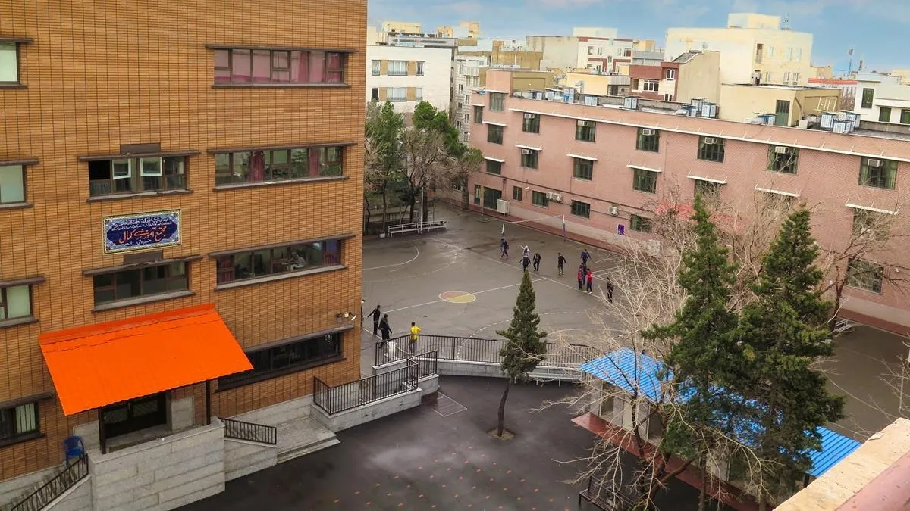
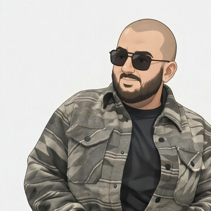

EdgeLog: When a 0.5B Framework Rivals 7B LLMs in Log Analysis
Type
Academic research project
Authors
Full author list pending verification
Focus
Efficient LLMs · Log analysis · Deployment
A compact 0.5B-scale framework for log-analysis research, evaluated against substantially larger 7B LLM baselines with emphasis on efficiency and practical deployment.
The supplied CV describes EdgeLog as an efficiency-oriented framework for log analysis. A final publication page should replace this summary with a verified manuscript abstract, authors, venue link and paper/code links once available.
WORK · 02MANUSCRIPT
Manuscript ReadyReady for submission
MAB-RAFD: Bandit-Controlled Role-Adaptive Factor Decoupling for Federated LoRA
Type
Academic research project
Authors
Full author list pending verification
Focus
Federated Learning · LoRA · Bandits
A bandit-controlled, role-adaptive factor-decoupling approach for federated LoRA, targeting adaptive and communication-efficient model personalization.
The current evidence supports the research direction and manuscript status, but not a publication claim. Final content should use the verified manuscript abstract and destination venue when Ali supplies them.
Research connection map
One systems question, several constraints.
Select a research node to see how it connects to Ali’s current work.
02 · Academic journey

EarlierKamal SchoolTiny milestone preview

Future chapterNext / unwritten
Radar acquire · pass · reveal
03 · Research & teaching experience
01Research
Research leadership
Research Assistant & Lab Co-Lead
Distributed Infrastructure for NextGen Applications Lab · IUST
— Tehran, Iran
Co-led lab operations, infrastructure, member onboarding and technical sessions across a two-year term.
Facilitated weekly meetings and mentored M.Sc. and undergraduate researchers.
Shaped distributed/ML systems ideas into publication-oriented work and co-developed a conference manuscript.